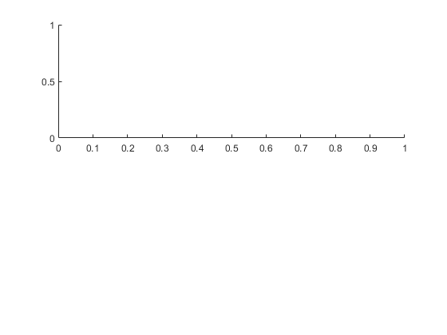
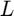
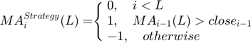
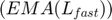
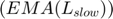
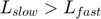
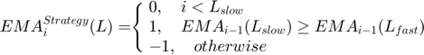

Algorithmic Trading in Matlab
Contents
start function
function start() trading_pair = "BTCUSD"; tiledlayout(2,1) % we use two subplots % Top plot nexttile %This information can be easily plot in as candles, which indicates the open, %high, low and close price of each tick. The following code shows the hourly %price of the last week. btc = getPriceAction(trading_pair, "1h", 24*7); candle(btc) %plot canlde sticks hold on %now create bollinger bands [middle,upper,lower]= bollinger(btc); CloseBolling = [middle.close, upper.close,... lower.close]; plot(middle.Time,CloseBolling) title(trading_pair + " candles") hold off %Using the close price, we can calculate the return of each tick. This indicates %the percent of change with regard the previous tick, which represent the theoretical %gain (or loss) obtained if holding the assets for each tick. And the cumulative %sum of these returns would represent the buy and hold strategy return over the time. btc.tickRet = [0; (btc.close(2:end)- btc.close(1:end-1))./btc.close(1:end-1)]; % Bottom plot nexttile %figure % open new plot window for multiple line plotting hold on plot(btc.Time, btc.tickRet) % TickReturns plot(btc.Time, cumsum(btc.tickRet)) % BuyAndHold SMA_str = SMA_strategy(btc, 20); %20=lagging, 3=leading moving average SMA_cumret = evaluateStrategy(btc, SMA_str, 0.001); %taker fee being 0.001 plot(btc.Time, SMA_cumret) legend('TickReturns', 'BuyAndHold', 'SMA returns') hold off title(trading_pair + " strategies") grid on; % optimization aisearch = PSO(@fitnessFunction, 13); aisearch.sizePopulation = 100; aisearch.maxNoIterations = 100; aisearch.start(); end
Get prices from Exchange
The response storage in data contains a matrix of 6 columns and 1000 days, with the information of the date; low, high, open and close price of such day and amount of volume trade over it. This information is more useful in a timetable object, which allows a more handy way of manipulating the data, like sorting using the Time column. The following function can be used to obtain the timetable object with the lastest price action of the indicated market ("BTCUSD" for example) and desired interval ("1h" for example).
function tt = getPriceAction(traidingpair, interval, limit) urlTemp = sprintf('https://api-pub.bitfinex.com/v2/candles/trade:%s:t%s/hist', interval, traidingpair); data = webread(urlTemp, 'limit', limit, 'sort', -1); date = datetime(datestr(data(:,1)/86400/1000 + datenum(1970,1,1))); open = data(:,2); close = data(:,3); high = data(:,4); low = data(:,5); vol = data(:,6); tt = timetable(datetime(date), open, high, low, close, vol); tt = sortrows(tt, 'Time'); tt = unique(tt); end
Evaluate Strategy perfomrance
%With this information, any strategy can be applied over the tick returns by %multiplying a vector that selects the ticks on which the strategy is long %with a value of 1, short with a value of −1 or without a position with %a value of 0. Then by using the cumulative sum of this multiplication %(cumsum(strategy .* btc.tickRet)) the return over time of such strategy %can be obtained. However, this do not reflect the fees expended every time %an order is executed, which can be included by substracting the difference %of the strategy vector. function cumret = evaluateStrategy(asset, strategy, fees) orders = [0; diff(strategy)]; % Change of position %tickRet = [0; (asset.close(2:end) - asset.close(1:end-1))./asset.close(1:end-1)]; %strategyRet = tickRet .* strategy; % Strategy Tick Returns strategyRet = asset.tickRet .* strategy; % Strategy Tick Returns strategyRet = strategyRet - abs(orders) * fees; % Add fees cumret = cumprod(1 + strategyRet) - 1; % Strategy Cumulative Returns end
A simple moving average (SMA) strategy
Finally, it is important to remember that any strategy we use has to be formulated by considering only the previous price values of each tick. This means, that no future price value can be known beforehand, and as we're considering the close price of each tick, the current index is unknown until the tick ends, or the new one starts. As an example, a simple strategy can be formulated using the Moving Average (MA), which calculates the average price over a certain window length  of ticks, filtering the signal into a smoother representation. A possible rule for this strategy is to buy every time the tick close price cross over the MA line, and sell when it cross under it. A simple moving average (SMA) strategy can be implemented as follows: 
% parameters of the function: % @asset = timeseries with close price % @sliding_window = type of MOVAVG with [20 = lagging indicator, 3 = leading indicator] % function strategy = SMA_strategy(asset, sliding_window) movAvg = movavg(asset.close, 'linear', sliding_window); strategy = asset.close > movAvg; % Correct that we bought when the day closes, so that day return % is not counted and selling is apply on the close price of each day strategy = [0; strategy(1:end-1)]; strategy(strategy==0) = -1; % Use Short Orders % Wait until %sliding_window ticks before starting. this is to allow MA to % calculate over the perior as defined in sliding_window variable strategy(1:sliding_window) = 0; end
Dual moving average
using a Double Exponential Moving Average (DEMA) strategy requires at least two parameters, being the window length of both EMAs. This strategy considers a fast  and slow  signal, on which  and positions are made when these price lines crosses each other. This is strategy can be codified as follows: 
function strategy = dualMovingAverageStrategy(asset, slowWindow, fastWindow) slowMovAvg = movavg(asset.close, 'exponential', slowWindow); fastMovAvg = movavg(asset.close, 'exponential', fastWindow); strategy = slowMovAvg > fastMovAvg; strategy = [0; strategy(1:end-1)]; strategy(strategy==0) = -1; strategy(1:slowWindow) = 0; end
MACD
MACD strategy requires at least three parameters, two exponential moving averages window length of the asset price, and one for the difference between the first two EMAs. This strategy open a long position every time that the MACD Line crosses the MACD Signal Line and the value of the MACD Line is positive, and a short one when the opposite happens. Therefore, it does not always has an active position like MA and DEMA. This behavior is intended to avoid to open short positions on a bullish trend as explained in https://tradingsim.com/blog/macd/
function strategy = MACDStrategy(asset, slowMA, fastMA, ma) emaSlow = movavg(asset.close,'exponential', fastMA); emaFast = movavg(asset.close,'exponential', slowMA); MACDLine = emaFast - emaSlow; MACDSignalLine = movavg(MACDLine,'exponential', ma); MACDbars = MACDLine - MACDSignalLine; strategy = zeros(size(asset.close)); strategy(MACDbars > 0 & MACDLine > 0) = 1; strategy(MACDbars < 0 & MACDLine < 0) = -1; strategy = [0; strategy(1:end-1)]; end
mixStrategies function
Although these three strategies can be optimized individually with a good computer and a couple hours, when a more sophisticated mixture of strategies is intended to be implemented execution time of brute force is unpractical. One approach could be to use the individual best parameters of these strategies and then optimize the mixture weights between them. Splitting the complexity overall optimization, but resulting in sub-optimal solutions, due to different parameters might result optimal when a combination of strategies is intended as opposite of their individual strategy behavior. Although, several ways of mixing these strategies can be formulated, a simple weighted sum can be implemented as follows. This function considers that when the sum of the strategies positions is higher than 1, then the long positions is confirmed, or lower than -1 indicates a short one. Also, when the sum results is between the range $[−1,1]$, no consensus is reached, therefore no positions is advised:
Error updating Text. String scalar or character vector must have valid interpreter syntax: $[−1,1]$
function newStrat = mixStrategies(strats) sumStrat = sum(strats, 2); newStrat = zeros(size(strats, 1), 1); newStrat(sumStrat >= 1) = 1; newStrat(sumStrat <= -1) = -1; end
Fitness function
Given the higher number of parameters in a mixture of strategies, other optimization methods can be applied to find efficient solutions quickly. Previous works have make use of Metaheuristics Algorithms to find sub-optimal parameters for single strategies, such as the moving average in (Lee et al. 2005), or a mixture of them in (S.Tawfik, Badr, and Abdel-Rahman 2013) (Contreras, Hidalgo, and Núñez-Letamendia 2013) (Stasinakis et al. 2016) (Hu et al. 2015). Metaheuristics Algorithms are designed to operate as black boxes, in such way that their application results relatively easy. In this case, the open source AISearch toolbox(Reyna-Orta 2019) (https://github.com/aeroreyna/AISearchMatlab) provides the Metaheuristics implementation. For the case of the application of trading strategy optimization, these can be applied by selecting the dimensionality of the problem as the number of parameters to be adjusted, a function that transform each dimensionality between the desired boundaries and a fitness function that evaluates the solutions offers by the algorithm. If the MA, DEMA, MACD and RSI strategies are considered, then there is 2, 3, 4, and 4 parameters to be found respectively, considering the weight of the strategy as well. Therefore, the dimensionality of the problem becomes 13, and each dimension is manipulated to belong between the boundaries of each strategy. The following function shows an implementation of the designed fitness function, which calculates the strategy of each indicator and their weighted mixture. This mix strategy is evaluated against the historical data, and the final return is used as fitness value.
function y = fitnessFunction(x) bounds = [1000, 1000, 1000, 500, 500, 50, 50, 50, 500, 1, 1, 1, 1]; MA_Strategy = movingAverageStrategy(asset, ceil(xT(1))); DMA_Strategy = dualMovingAverageStrategy(asset, ceil(xT(2)), ceil(xT(3))); MACD_Strategy = MACDStrategy(asset, ceil(xT(4)), ceil(xT(5)), ceil(xT(6))); RSI_Strategy = rsiStrategy(asset, ceil(xT(7)), 100 - ceil(xT(8)), ceil(xT(9))); Mix_Strategy = mixStrategies2(xT(end-3:end).*[MA_Strategy, DMA_Strategy, MACD_Strategy, RSI_Strategy]); Mix_cumret = this.evaluateStrategy(asset, Mix_Strategy, fees); y = assetR.Mix_cumret(end); end
Unrecognized function or variable 'asset'.
Error in start>fitnessFunction (line 236)
MA_Strategy = movingAverageStrategy(asset, ceil(xT(1)));
Error in metaheuristic/evalPopulation (line 140)
fit = self.fitnessFunction(population);
Error in metaheuristic/start (line 70)
self.evalPopulation();
Error in start (line 62)
aisearch.start();